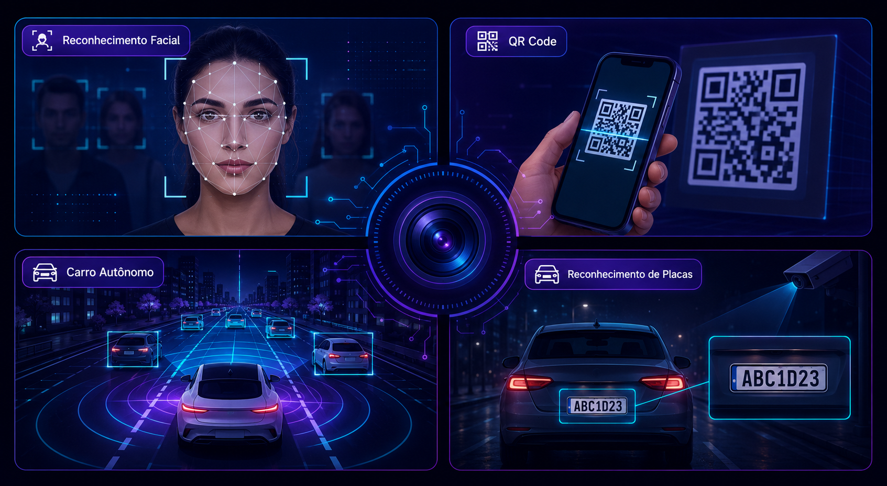
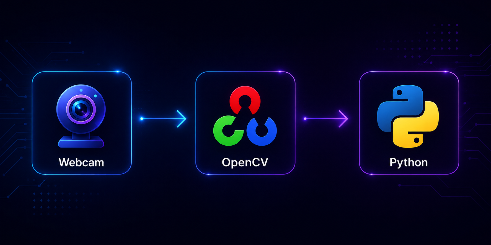
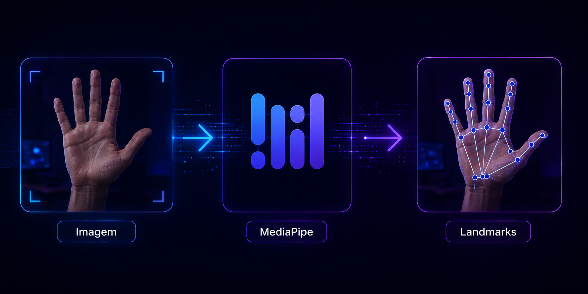
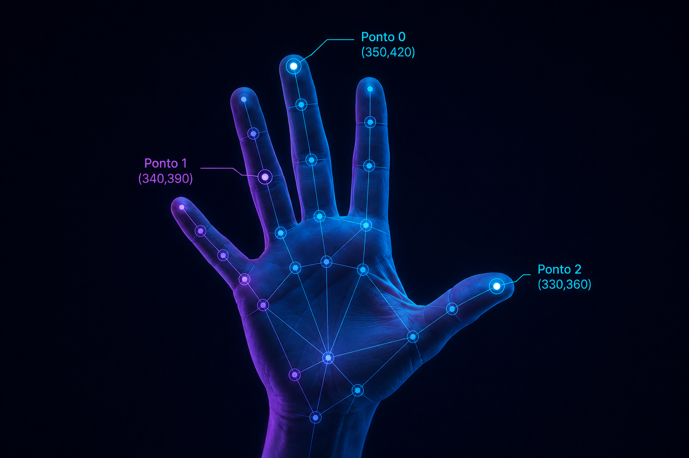
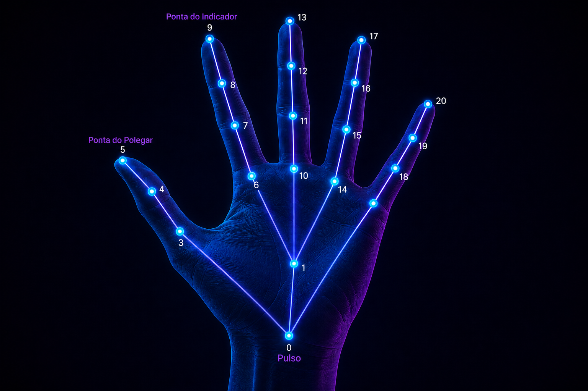
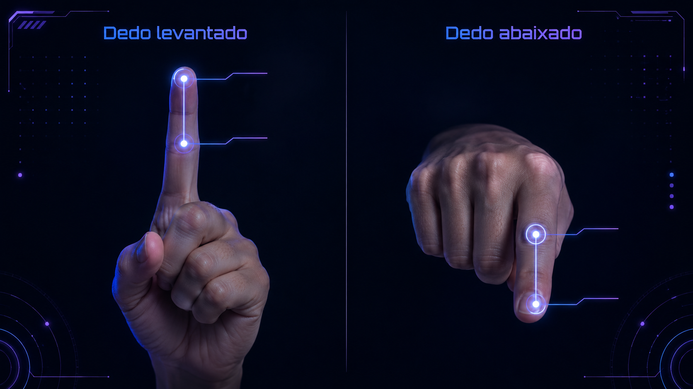

Uma introdução prática à Visão Computacional com Python
Vamos construir uma aplicação capaz de reconhecer e identificar números feitos com a mão utilizando apenas uma webcam.
Visão Computacional é a área da computação que permite computadores interpretarem imagens e vídeos. Diferente dos humanos, computadores não "enxergam" — eles analisam padrões presentes nas imagens.

Nosso projeto utiliza duas bibliotecas principais, e cada uma possui uma responsabilidade diferente.


Para nós, existe uma mão. Para o computador, existe apenas uma lista de coordenadas.
Se movermos a mão para a direita, essas coordenadas mudam.


Landmarks são pontos de referência. O MediaPipe identifica exatamente 21 pontos na mão. Cada ponto representa uma região específica, como:
O programa já fornece esses pontos para nós.
Como sabemos se um dedo está levantado? Se a ponta do dedo estiver acima da articulação, o dedo está levantado. Se estiver abaixo, o dedo não está levantado. Essa lógica vale para praticamente todos os dedos.
O polegar é uma pequena exceção, porque aponta para o lado. Na programação veremos que fazemos uma comparação diferente apenas para ele.

Nosso programa segue uma sequência simples: captura a imagem, encontra a mão, interpreta os pontos e transforma isso em um número mostrado na tela.
Agora vamos construir o projeto em quatro etapas.